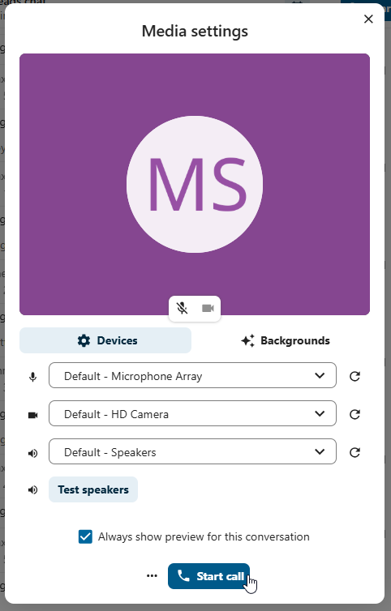

Join a call or chat as guest
Nextcloud Talk offers audio/video call and text chat integrated in Nextcloud. It offers a web interface as well as mobile apps.
You can find out more about Nextcloud Talk on our website.
Joining a chat
If you received a link to a chat conversation, you can open it in your browser to join the chat. Here, you will be prompted to enter your name before joining.

You can also change your name later by clicking the Edit button, located top-right.

Your camera and microphone settings can be found in the Settings menu. There you can also find a list of shortcuts you can use.

Joining a call
You can start a call any time with the Start call button. Other participants will get notified and can join the call. If somebody else has started a call already, the button will change in a green Join call button.

Before actually joining the call you will see a device check, where you can pick the right camera and microphone, enable background blur or even join with any devices.
{kind=link}

During a call, you can find the Camera and Microphone settings in the ... menu in the top bar.

During a call, you can mute your microphone and disable your video with the buttons in the top-right, or using the shortcuts M to mute audio and V to disable video. You can also use the space bar to toggle mute. When you are muted, pressing space will unmute you so you can speak until you let go of the space bar. If you are unmuted, pressing space will mute you until you let go.
You can hide your video (useful during a screen share) with the little arrow just above the video stream. Bring it back with the little arrow again.
More settings
In the conversation menu you can choose to go full-screen. You can also do this by using the F key on your keyboard. In the conversation settings, you can find notification options and the full conversation description.

Joining as an email guest
A guest can be invited to a conversation via email. The email contains a link to join the conversation. If the guest clicks the link, they will be redirected to the conversation with an individual access token.

An invitation can be done via inserting the email address in Participants tab search field.

You can bulk invite email participants by uploading a CSV file. The option is available in the conversation settings under Meeting section.